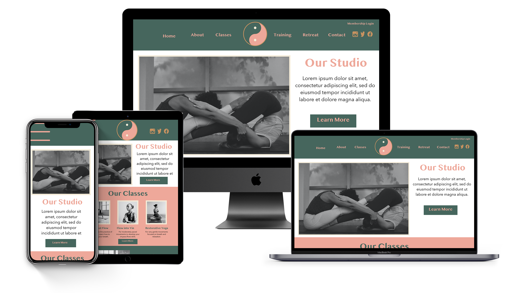
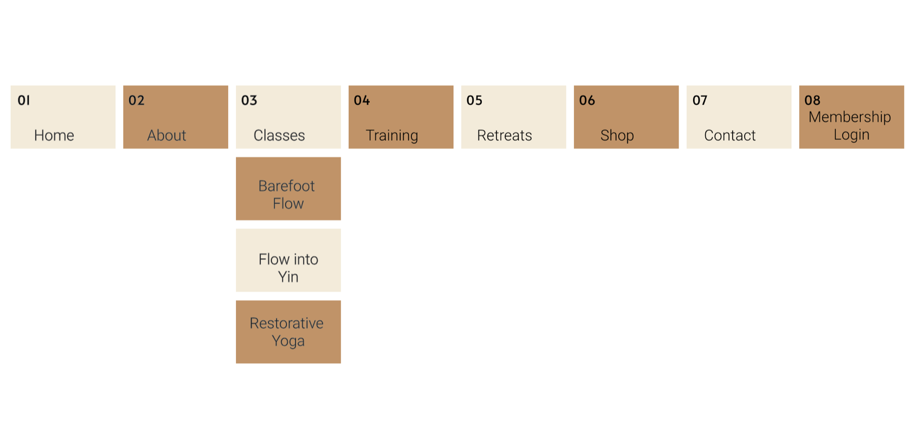
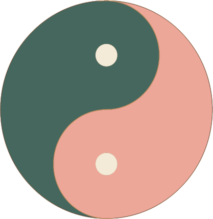
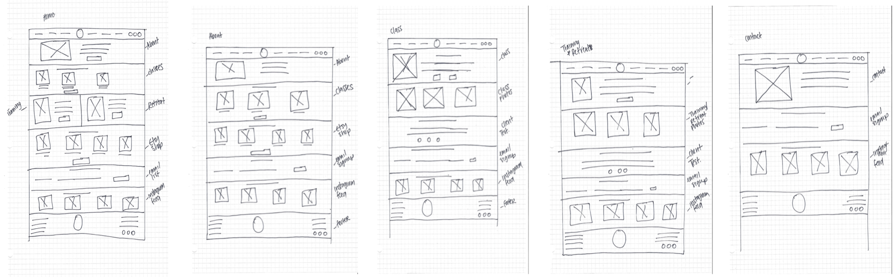
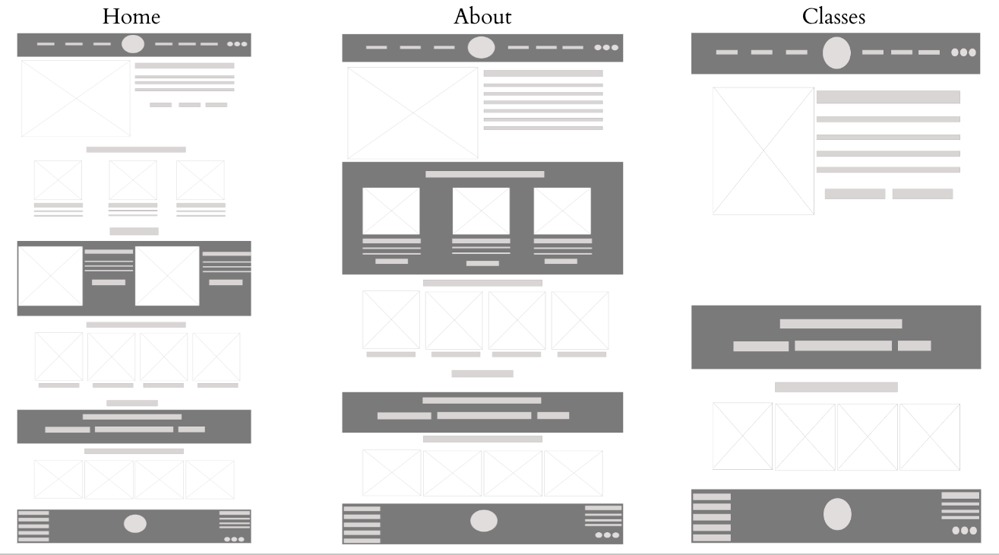

Yogi Wellness
Web Design
Project Overview
Yogi Wellness, a hatha yoga studio, aims to provide a serene and welcoming environment for yoga enthusiasts of all levels. Offering a variety of classes from beginner to advanced levels, Yogi Wellness focuses on promoting holistic well-being through the practice of yoga.
Role
My role was to enhance the user experience of their digital platforms, ensuring easy navigation, engaging content presentation, and seamless interaction with the target audience.
Tools
Adobe Illustrator, XD, and Photoshop
Timeline
7 Weeks
Goal
The primary goal is to create a user-friendly website that effectively communicates Yogi Wellness's offerings, engages users, and encourages them to take action, such as booking classes, exploring retreats, or purchasing merchandise.
Target Audience
The target audience comprises women aged 18-50, ranging from yoga newcomers to individuals pursuing certification. They seek a welcoming and inclusive yoga community where they can enhance their practice, improve their well-being, and connect with like-minded individuals.
Research
Competitive Analysis
Holy Cow Yoga's website stands out for its well-designed interface and user-friendly experience. The homepage effectively showcases upcoming workshops with compelling CTAs and testimonials, though more testimonials would enhance credibility. The color scheme complements the logo, and the shop page layout is good, though navigation could be streamlined.
Revive Yoga's website is praised for its calming design and layout, but the script font is criticized for readability issues. The logo aligns well with the overall design, but the CTA placement could be improved for better user engagement. The site's navigation is smooth, but a broken Instagram link limits exploration.
Sat Nam Yoga Center’s inclusive logo is appreciated, but the website's wordiness and lack of clear CTAs are noted as potential areas for improvement. However, the effective email opt-in and holistic imagery positively affect its appeal.
Personas
To gain more insight into our users' goals, needs, experiences, and behaviors, I developed personas representing the target audience.


Sitemap
Design Ideation
Logo
Brand Colors
#FFFFFF
#F4EBD8
#EEA89A
#C89260
#46665D
Wireframes
Sketches
Basic sketches outlining key interface elements and user flows.
Lo-Fidelity
Detailed wireframes with added visual elements and content.
High-Fidelity
High-fidelity mockups with polished visuals and refined design elements.
Reflections
Keeping the user at the center of every decision was crucial throughout the design process. By addressing the identified pain points and aligning the digital experience with Yogi Wellness's values, I aimed to create a platform that facilitates class bookings and fosters a sense of belonging within the yoga community. Overall, this project emphasized the importance of empathy-driven design.